Cana Brava Resort
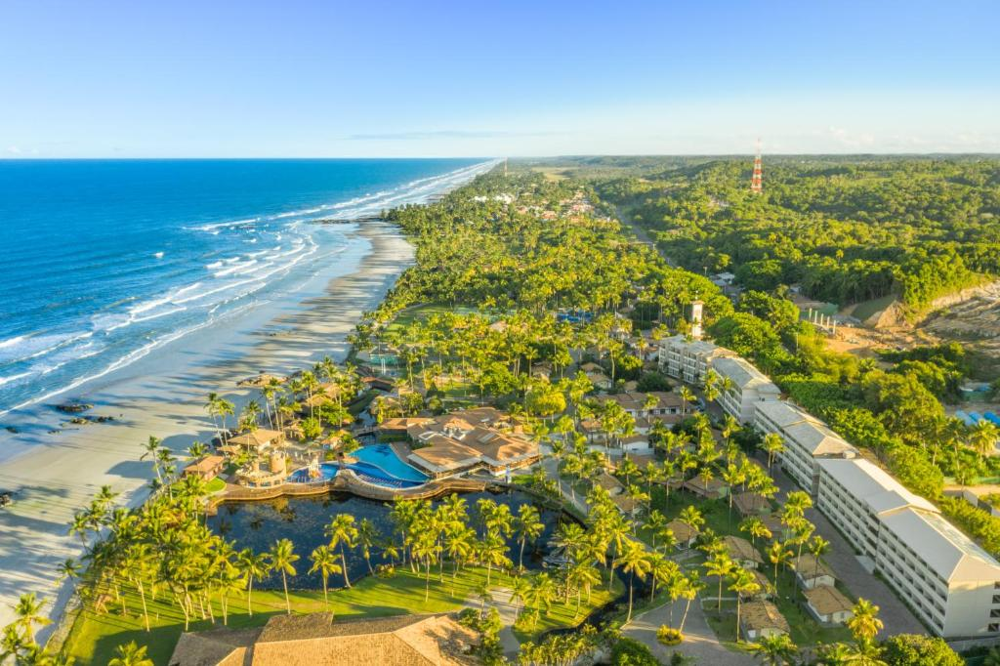
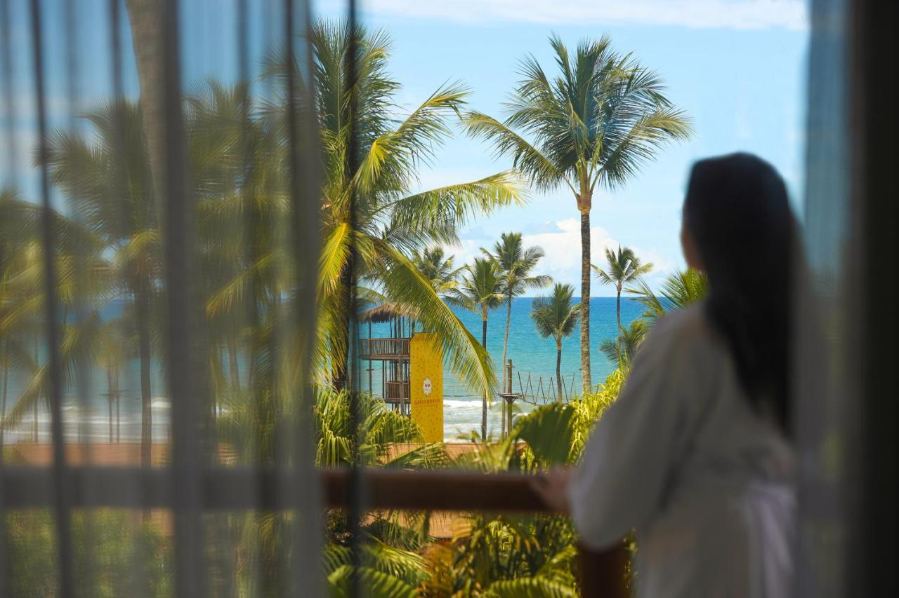
♦ Descrição ♦
O Cana Brava All Inclusive é um resort à beira-mar onde você pode desfrutar de várias opções de entretenimento no local, incluindo piscinas, apresentações de música ao vivo, bem como um lago para remo em pé e caiaque.
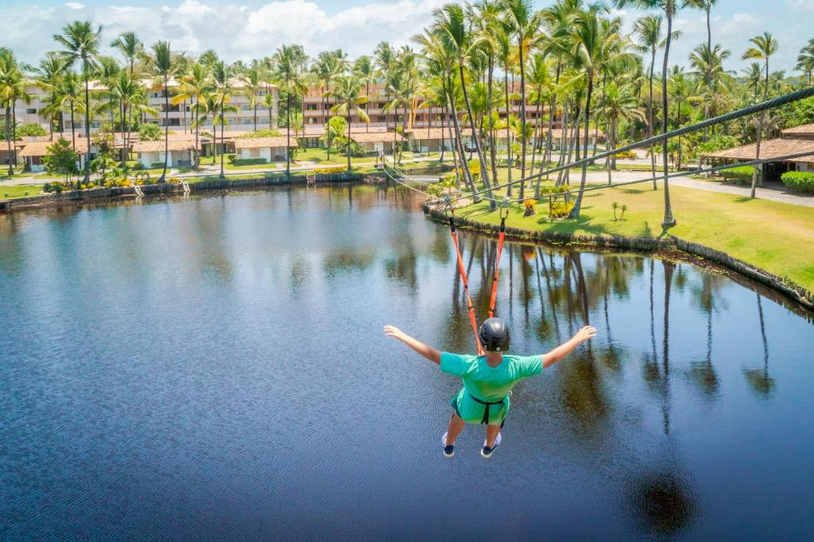♦ Localização ♦
Cana Brava se localiza em Ilhéus. O Aeroporto Jorge Amado está localizado a 24 km da propriedade e a praça da faculdade de Ilhéus fica 18 km de distância do resort.
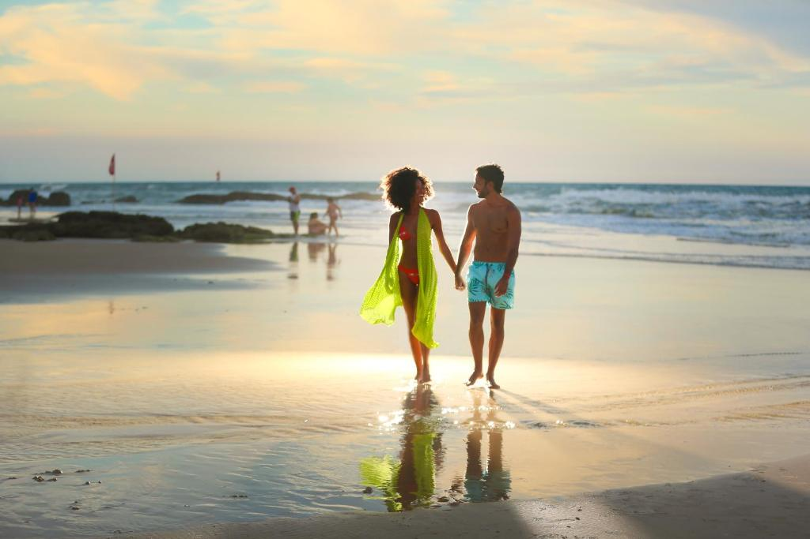
♦ Acomodação♦
Os quartos com ar-condicionado do Cana Brava Resort Hotel apresentam interiores coloridos e possuem TV a cabo, frigobar e Wi-Fi gratuito. Algumas unidades oferecem vista do lago ou do mar.
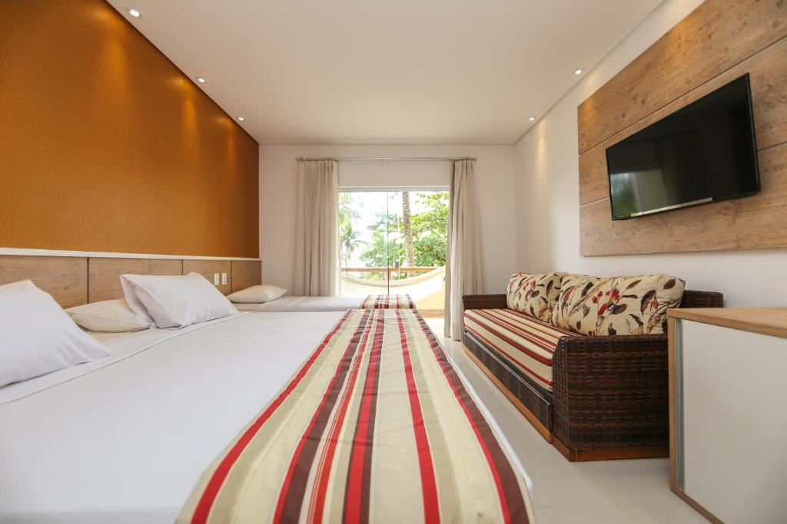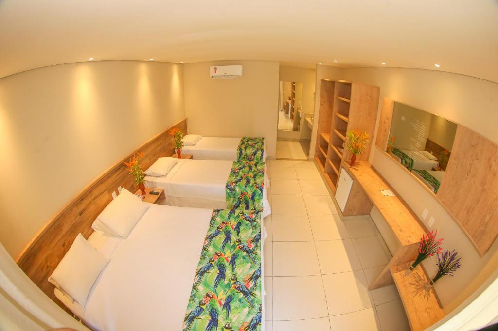
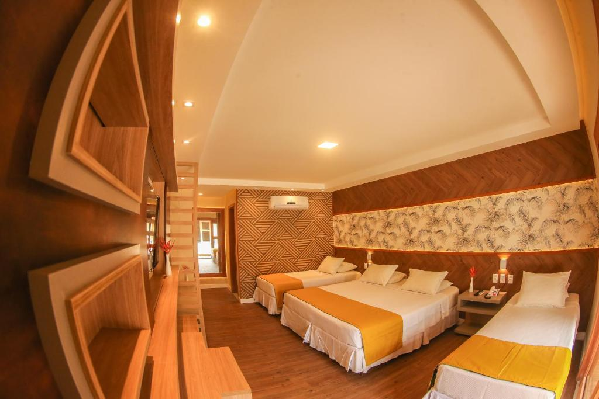
♦ Alimentação ♦
O restaurante do Cana Brava Resort serve pratos locais tradicionais, bem como da culinária internacional. Além disso, você pode relaxar com uma grande variedade de bebidas no bar, incluindo coquetéis especiais.
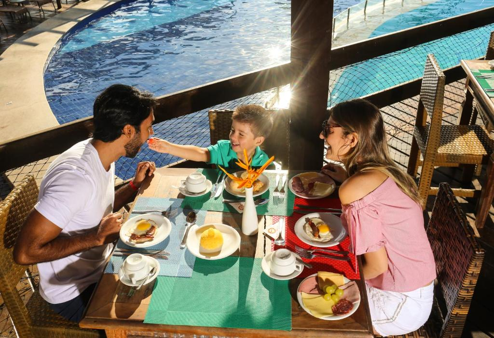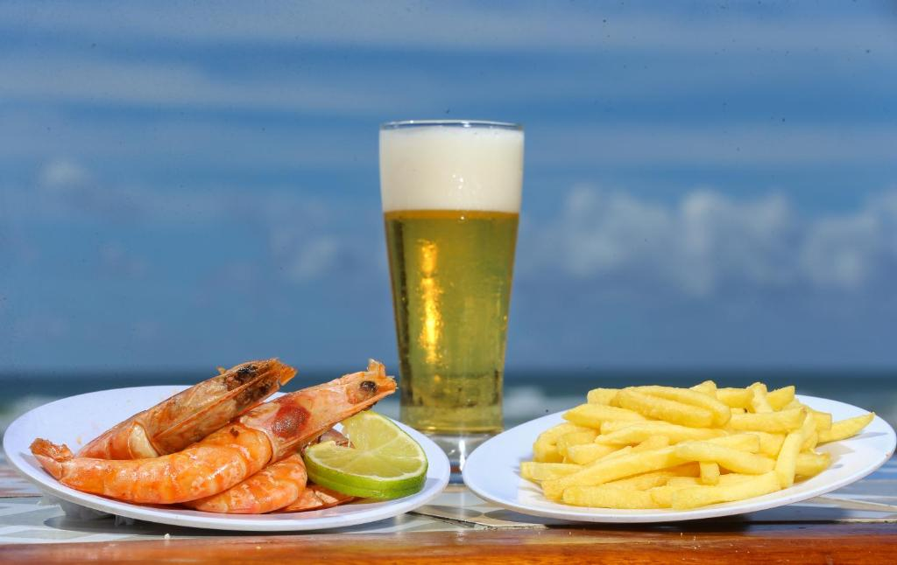
♦ Lazer ♦
Você pode alugar equipamentos de surf no Cana Brava. Você também pode desfrutar de outras comodidades, incluindo academia, salão de jogos e um cinema. O balcão de turismo do Cana Brava Resort oferece passeios para o centro histórico de Ilhéus, fazendas de cacau, a Cachoeira do Tijuípe e a Reserva Biológica de Una.
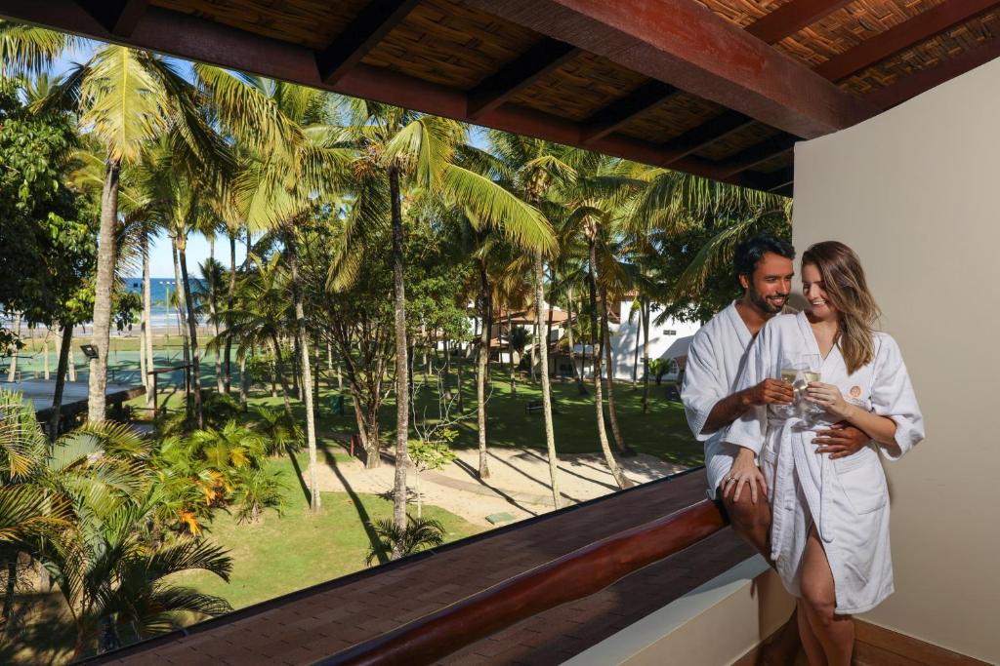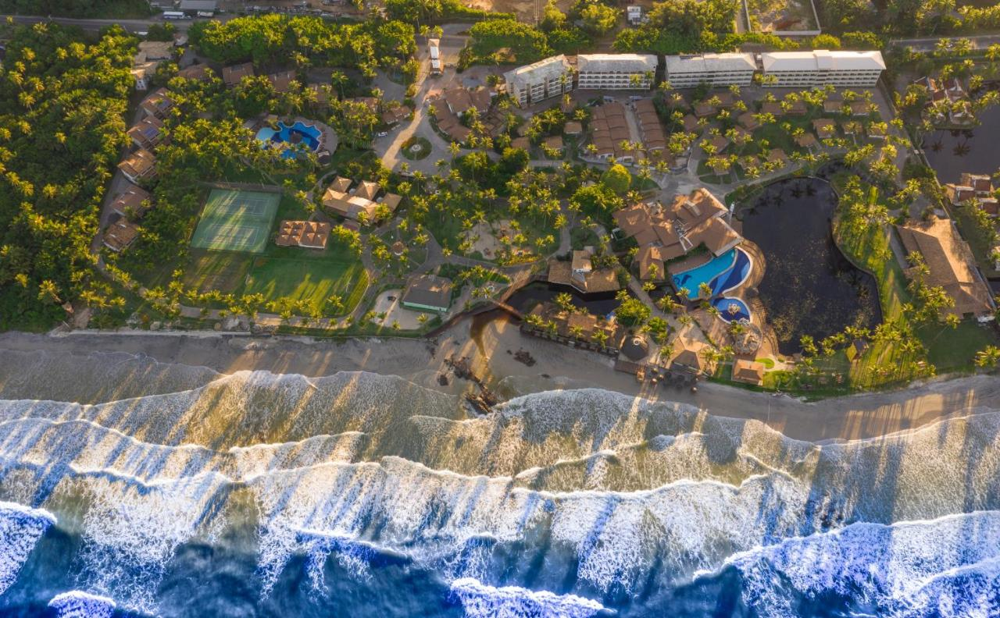
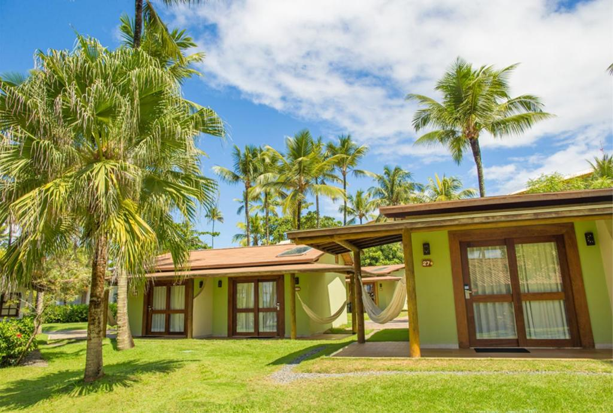
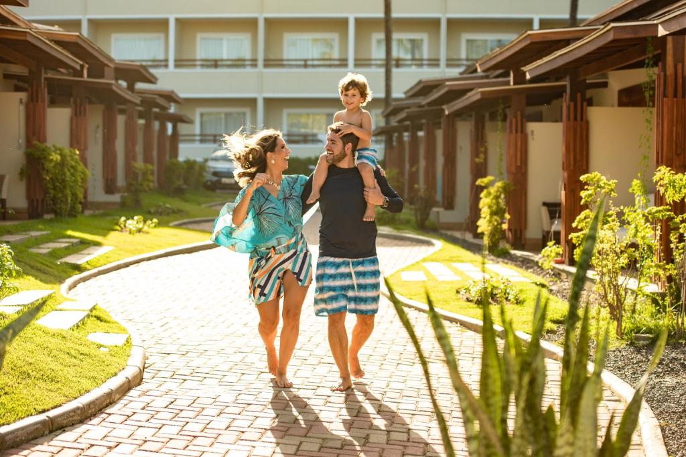
♦ Reservas ♦
Entradas das 15h às 21h30.
Saída até 12h.
Cancelamento/pré-pagamento: As políticas de cancelamento e pré-pagamento variam de acordo com o tipo de acomodação.
Políticas para crianças: Crianças de qualquer idade são bem-vindas. Para ver os preços e as informações de ocupação certos, informe quantas crianças fazem parte do seu grupo e a idade delas.
Não há exigência de idade para o check-in.
Animais não são permitidos.